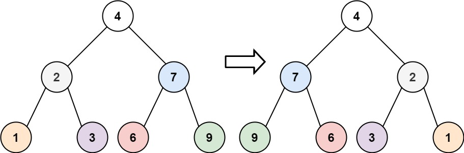
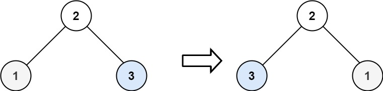

226. 翻转二叉树
题目与约束
给你一棵二叉树的根节点 root ，翻转这棵二叉树，并返回其根节点。
示例 1：

输入：root = [4,2,7,1,3,6,9]
输出：[4,7,2,9,6,3,1]
示例 2：

输入：root = [2,1,3]
输出：[2,3,1]
示例 3：
输入：root = []
输出：[]
提示：
- 树中节点数目范围在
[0, 100]内 -100 <= Node.val <= 100
Java 完整推导
Java 核心不变量
每个节点只做一件事：交换左右孩子。
完整推导
思路推导
这道题最适合训练“递归函数只负责当前节点”的思维：
- 空节点无需处理，直接返回。
- 当前节点交换
left与right。 - 对交换后的左右子树继续做同样的事情。
先交换再递归、先递归再交换都能得到正确结果；关键是整棵树的每个节点都恰好被处理一次。
Java 实现
class Solution {
public TreeNode invertTree(TreeNode root) {
if (root == null) {
return null;
}
TreeNode temp = root.left;
root.left = root.right;
root.right = temp;
invertTree(root.left);
invertTree(root.right);
return root;
}
}
复杂度
- 时间复杂度：
O(n)，每个节点访问一次。 - 空间复杂度：
O(h)，递归栈深度等于树高；退化链表时最坏为O(n)。
- 交换的是节点引用，而不是节点值。
- 不要只交换根节点；左右子树也必须递归处理。
- 迭代写法可使用队列做 BFS：节点出队后交换孩子，再把非空孩子入队。
Python 完整推导
镜像要落到每一棵子树
翻转二叉树不是只把根节点的左右孩子换一下。以根为界，整棵左子树应该接到右边，整棵右子树应该接到左边；并且原来的两棵子树内部也要继续翻转。
递归函数只回答一个问题：把传入的这棵树翻转完成后，新的根是谁？空树没有可翻转的内容，返回 None；非空时先分别处理两个子树，再交换它们返回的根。
以 [4,2,7,1,3,6,9] 为例
这棵完整的两层树在交换根的孩子之前，外层形态是 4 的左 2、右 7。为了让左右两边内部也镜像，先分别处理：
- 对
2翻转，孩子1、3交换，得到2下的3、1。 - 对
7翻转，孩子6、9交换，得到7下的9、6。 - 回到根
4，把刚才完成翻转的两棵子树交换位置。
最终层序是 [4,7,2,9,6,3,1]。可以看到，根下面换了边，原来的 1,3 也换成 3,1；两处都发生变化，才是完整翻转。
代码先递归、后交换和先交换、后递归都可行。这里先递归是为了让 left、right 明确表示“两棵已经完成的子树”，随后一次元组赋值即可交换。
题目节点数不超过 100，因此即使树退化成一条链，递归深度也小于 101。这里保留递归是为了让“先完成子树，再交换引用”与返回新根的关系更直观，不必为了很小的输入引入额外容器。
Python 实现
参考来源：代码随想录（programmercarl.com）
沿用项目旧 Python 的递归翻转代码与旧 Java 的“每层交换左右孩子”思路；仅整理导入、变量和注释。
from typing import Optional
class Solution:
def invertTree(self, root: Optional[TreeNode]) -> Optional[TreeNode]:
if root is None:
return None
left = self.invertTree(root.left)
right = self.invertTree(root.right)
root.left, root.right = right, left
return root
引用交换与返回新根
root.left, root.right = right, left 修改的是当前树的结构，右侧先取完成翻转的右子树根，再把它接到左边。Python 会先在等号右边计算好两个引用，因此不会出现第一项赋值覆盖第二项所需值的问题。
函数最后必须返回 root：父节点的递归调用需要拿这个根接到自己的孩子位置。空节点返回 None，保证叶子节点的孩子也能按同一条规则处理。
复杂度
- 时间复杂度：
O(n)。 - 空间复杂度：
O(h)。
每个节点访问一次并做常数次赋值，时间 O(n)；递归调用栈最深受树高 h 限制，题目 n <= 100。
力扣原题
C++ 实现
实现来源：代码随想录（programmercarl.com）
class Solution {
public:
TreeNode* invertTree(TreeNode* root) {
if (root == NULL) return root;
swap(root->left, root->right); // 中
invertTree(root->left); // 左
invertTree(root->right); // 右
return root;
}
};
Go 实现
实现来源：代码随想录（programmercarl.com）
func invertTree(root *TreeNode) *TreeNode {
if root == nil {
return nil
}
root.Left, root.Right = root.Right, root.Left //交换
invertTree(root.Left)
invertTree(root.Right)
return root
}
C 实现
实现来源：代码随想录（programmercarl.com）
struct TreeNode* invertTree(struct TreeNode* root){
if(!root)
return NULL;
//交换结点的左右孩子（中）
struct TreeNode* temp = root->right;
root->right = root->left;
root->left = temp;
左
invertTree(root->left);
//右
invertTree(root->right);
return root;
}